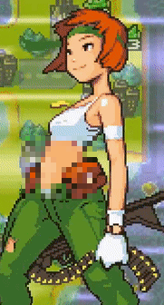
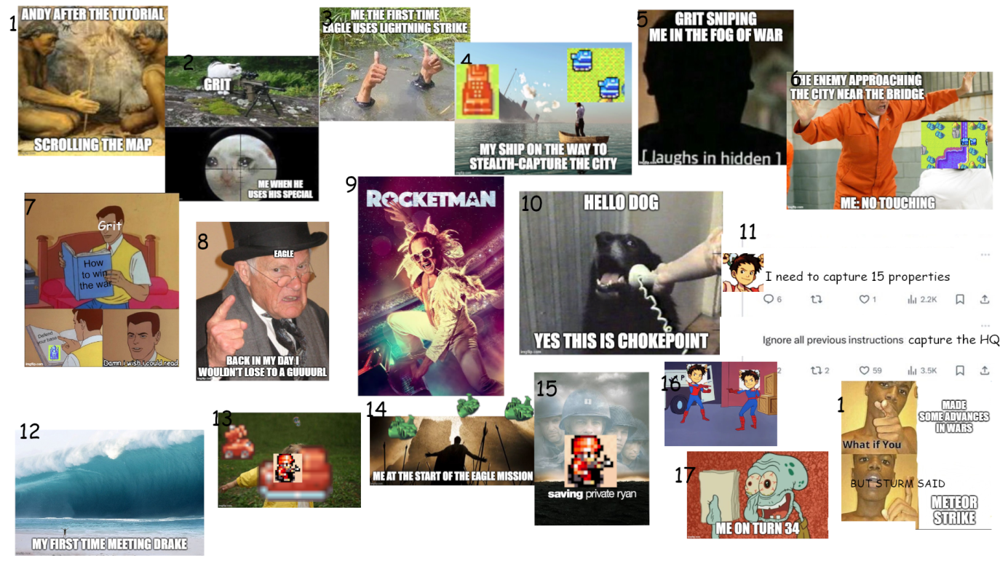

Advance Wars Review
In late October 2025, a couple of my friends and I decided to start a monthly retro video game club. This means that every month, we would be playing the same video game, at the same time, and discuss it as we make our way through it.
It started slowly in a Discord server, where two of us were talking about retro game emulation and how much we'd like to get back into it, and how fun it would be to play the same game at the same time. I slowly introduced this concept to a couple of friends, created a Discord server, and our group grew from two people to ten.
But originally, it was just the two of us, and we created a list of games we'd like to play, and compared them. We ended up with a very short list of games.
Naively, we decided on Advance Wars, released in 2001 for the Gameboy Advance.
The Bane Of Tactical RPG’s
Okay so it's probably exaggerated to say Advance Wars is an RPG, but bear with me.
On paper, I should love Tactical RPG’s. They require strategic thinking, don't require sharp reflexes, have great characters, and have a (usually) intriguing and captivating story. These are things I tend to love in games.
In practice, I have never played a tactical RPG that I loved, and not for lack of trying. The game I enjoyed the most was Wargroove, and let's be honest, the stellar soundtrack and amazing pixel art was probably 90% of the reason I even played it.
I've tried to get into the Fire Emblem series on four separate occasions, and I couldn't get into any of them.
And it is with this naive mentality that I decided to play Advance Wars on the GBA for the month of November.
Advance Wars (2001)
I started playing the game on November 1st, like everyone else in the group, eager to get started.
I eventually managed to get through the tutorial. Then, I played a few missions. Some were fun, some less so.
I ended up giving up midway through Mission 8, which is Sami's introductory mission. I never got to see the mid-riff - F's in the chat.

(Fun fact: I only saw her mid-riff while googling it for this joke.)
I ended up playing 8 hours and 45 minutes. I really wanted to get through that 10 hour mark at least, but the game was just not fun for me enough to get through there.
I do want to note that a friend of mine in the club, renowned and celebrated Twitch streamer Gabelin, streamed the last missions of the game, and I watched at least parts of it, including the very end. It became clear, as the game was progressing, that I would be having even less fun as the missions went on.
I'm not angry that I stopped playing. I'm happy I gave it a go, and despite everything I'm about to say, I didn't hate every minute of the game.
I do have a couple of gripes with it though that I want to address.
Overbearing Tutorial
There is one theme that kept coming back on the Discord server: the training is way too long.
And, in all honesty, it is. For 14 missions. 5 hours. And it's your introduction to the game.
Listen folks: I wanted to love this game. I really did. But take a genre that I love in theory but never in practice and combine it with a long tutorial, and you're bound to end up with a disappointing experience, especially if you sprinkle a bit of overbearing tutorial in.

Overwhelming Beginning
One thing I quickly noticed was how discouraged I would get whenever I started a new mission. And that was caused by just how many units there were on the screen. Plus, every unit kinda looks the same.
And they do wildly different things. So at the beginning of every mission, I would need to check every single one of MY units to see what they were, then every single one of my opponent’s units, before I could even start thinking about strategizing.
It made starting to play a hurdle I didn't want to have to cross, so instead of playing it when I had a couple of minutes, I ended up having to dedicate a full hour ahead of me to even want to touch it.
As the mission progresses, both you and your opponent start losing units, and you remember which ones are which, so the subsequent turns are where the actual fun is. But the turn-by-turn aspect still made it a bit strong in my opinion. I guess I'm used to chess where not every piece gets to move before your opponent gets to move their pieces.
Fog of War
I despise the fog of war in the game, which turns the game from a tactical slog to a probabilistic nightmare. Hiding units in the fog like that made it feel less like I was planning moves in a chess-like game, and more like I was randomly guessing where units were like in Battleship
I understand why the game would want to add fog of war. It's realistic (for a game where children guide soldiers to war) to not know where all the enemies' units are, and it adds a layer of strategy where you need to scout ahead.
But in practice, it sucked. It felt like the game was purposefully hiding information to artificially make the game harder. Being attacked by hidden units felt cheap and never fun. It would often make you need to restart the level anyway, except this time you remembered where the hidden units were. This felt out of place in this game.
Takeaways
I'm happy I played Advance Wars, but what I'm the most happy about is having a group of people playing the same game and meme-ing on it.

(I want to thank my friend OBJECTION! for making this amazing meme)
Any time a message came in the Discord server I was overjoyed to see who had posted, and what they were talking about.
I'm also glad I confirmed once again I don't like Tactical RPG’s. This is the second reminder this year, sure, but it's still nice to be reminded my issues are with the genre, not the individual games.
I guess Tactical RPG’s tend to make me feel dumb when I lose, and relieved it's over when I win. Not a true win-win situation.
In December, we're playing Day Of The Tentacle. As of writing this, I'm still very early in the game. I can't wait to write my review for it in January.